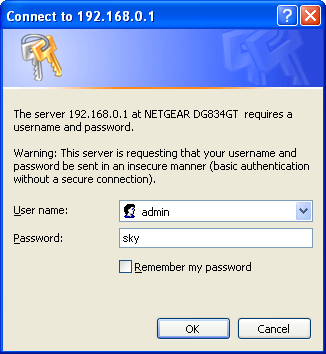
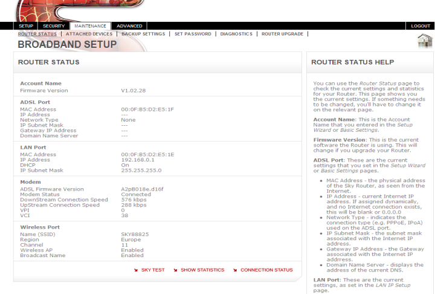
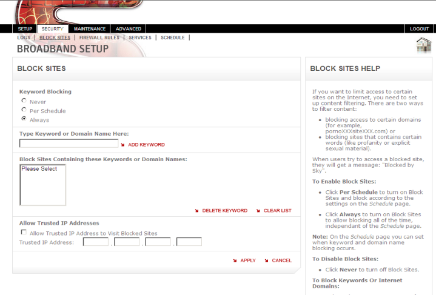
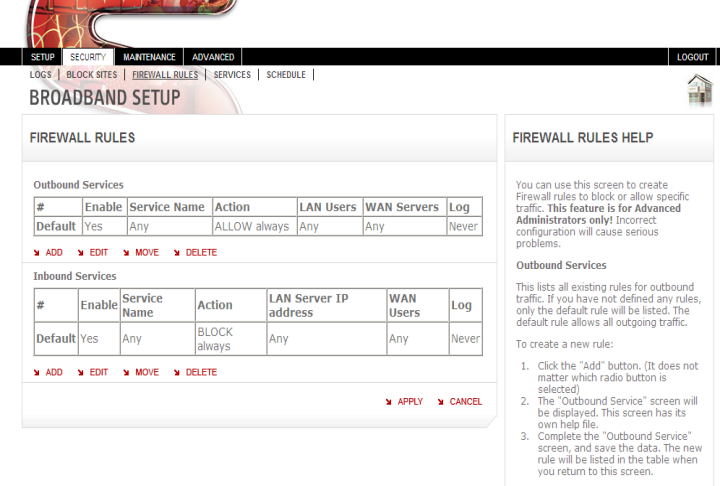

Step 3
To check the security settings on your Sky wireless router, follow the steps below:
-
Open a web browser window (e.g. Internet Explorer), enter 192.168.0.1 in the address bar and hit ‘Return
-
A login box will pop up – enter:
- Username: admin
- Password: sky
 -
You will then be presented with the screen below:
 -
In the menu on the left hand side of the screen, click on Block Sites (in the Security section), and check that the settings are as shown:
 -
In the menu on the left hand side of the screen, click on Firewall Rules (in the Security section), and check that the settings are as shown:
 -
If you have anything else listed, reset the Sky wireless router to its default settings:
- Ensure your Sky wireless router is on
- Locate the small reset button on the back next to where the power cord plugs into the wireless router
- Using a blunt pointed object (such as a pen), press and hold in the reset button until the test light blinks, then release the button
- The Sky wireless router will now restart, and will be reset to the Sky Broadband default settings.